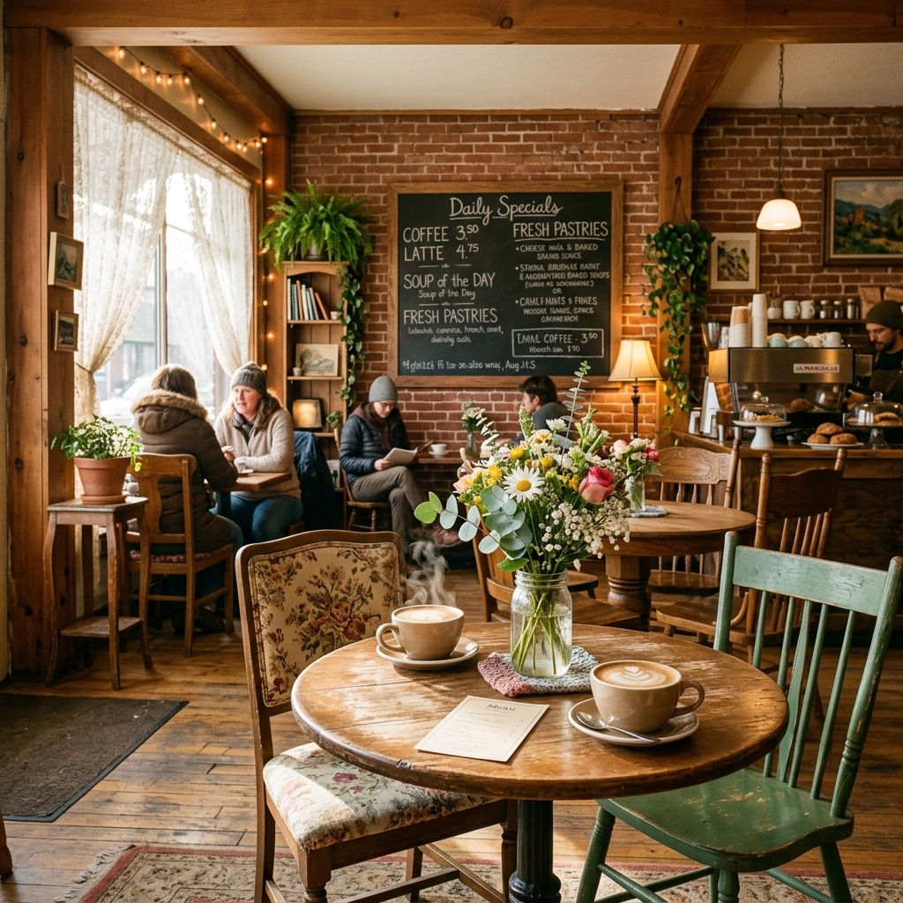
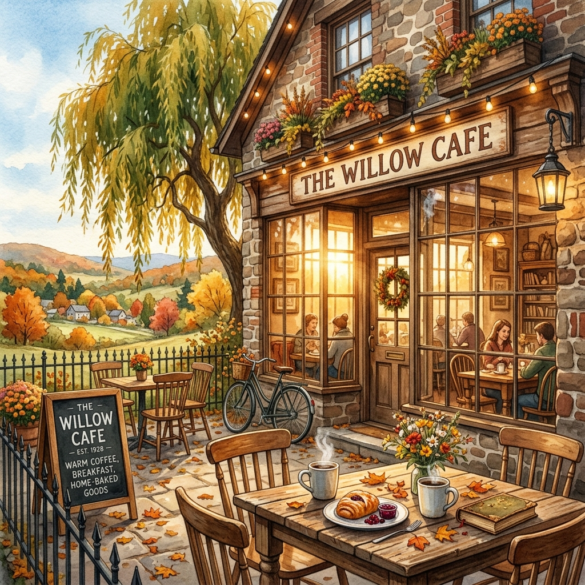

Nestled in the heart of Myerstown, PA — Olde Willow Tree Cafe is your cozy escape for homemade breakfasts, hearty lunches, and good old-fashioned Pennsylvania charm.

Tucked away at 10 North College Street, the Olde Willow Tree Cafe is more than just a place to eat — it's a beloved community gathering spot where locals and visitors alike come to start their day right.
Our menu celebrates the beauty of simple, homemade comfort food. From our famous breakfast wraps packed with scrambled eggs, fresh peppers, and Colby Jack cheese, to our warm baked oatmeal and golden waffles — every dish is crafted with love.
What makes us truly special? After your meal, wander through our attached primitive and craft shop — a curated collection of handmade goods, rustic décor, and one-of-a-kind gifts. It's an experience unlike any other in Lebanon County.
See Our Full Menu →From our rustic dining room to our charming craft shop — every corner of the Cafe tells a story.

"Absolutely the coziest little spot in Myerstown! The breakfast wrap was incredible — perfectly seasoned and super filling. The staff are so warm and welcoming. I'll be back every week!"
"We discovered this gem while driving through Lebanon County. The baked oatmeal was like nothing I've ever tasted — so warm and homemade. The primitive shop after was an unexpected delight!"
"Best waffles in all of Pennsylvania! No exaggeration. The atmosphere feels like eating at your grandma's house but better. This place has heart and soul in every bite."
"Such a hidden gem! The portions are generous, the prices are fair, and the quality is outstanding. The friendly service makes it even better. Highly recommend to anyone in the area."
"We stop here every Saturday on our drive through town. The omelettes are made perfectly every time. Mismatched chairs, lace curtains, fresh flowers — it's just charming in every way."
"A truly unique experience. Great food, excellent coffee, and the attached craft shop is a wonderful bonus. Love that this place exists in our community. Please never change!"
"Absolutely the coziest little spot in Myerstown! The breakfast wrap was incredible — perfectly seasoned and super filling. The staff are so warm and welcoming. I'll be back every week!"
"We discovered this gem while driving through Lebanon County. The baked oatmeal was like nothing I've ever tasted — so warm and homemade. The primitive shop after was an unexpected delight!"
"Best waffles in all of Pennsylvania! No exaggeration. The atmosphere feels like eating at your grandma's house but better. This place has heart and soul in every bite."
"Such a hidden gem! The portions are generous, the prices are fair, and the quality is outstanding. The friendly service makes it even better. Highly recommend to anyone in the area."
"We stop here every Saturday on our drive through town. The omelettes are made perfectly every time. Mismatched chairs, lace curtains, fresh flowers — it's just charming in every way."
"A truly unique experience. Great food, excellent coffee, and the attached craft shop is a wonderful bonus. Love that this place exists in our community. Please never change!"
The Olde Willow Tree Cafe is a whole experience — from the first sip of coffee to the last browse of our craft shop.
Every dish made fresh from scratch each morning. No shortcuts, no freezer food — just real, honest, delicious cooking the way it should be.
Uniquely attached to our cafe, our primitive and craft shop offers handmade goods, rustic décor, and charming gifts you won't find anywhere else.
Mismatched vintage furniture, lace curtains, mason jar flowers — our space is carefully curated to feel warm, inviting, and uniquely ours.
When the weather is beautiful, enjoy your breakfast or lunch in our lovely outdoor seating area. Perfect for spring and autumn mornings in Pennsylvania.
A cornerstone of the Myerstown community. We love our neighbors and they love us back — rated 4.8 stars across multiple platforms.
Conveniently located at 10 N College Street in the heart of Myerstown, PA. Easy parking and right in the center of town — easy to visit.
We're right in the heart of Myerstown, Pennsylvania — easy to find, hard to forget.
Come experience the warmth, the homemade flavors, and the charm that makes Olde Willow Tree Cafe truly one of a kind. Open Wed–Sat, 8AM–3PM.